096 — Proyecto: infraestructura multiambiente promovible
Parte: 07 — Infraestructura como código y configuración
Nivel: intermedio-avanzado · Horas estimadas: 8
Laboratorio: capstone · Estado: EXECUTABLE_CORE
🎯 Propósito
Integrar las once clases anteriores en una infraestructura que se promueve entre cuatro entornos con el mismo código, y calificar la hipótesis de la clase 084. Acertó en dos afirmaciones y su primera parte partía de un supuesto que esta parte no cumplió: predijo lo que haría un bucle continuo, y lo que se construyó fue detección programada. El resultado es más interesante que el acierto: la detección sola, sin corregir nada, consiguió la mayor parte del efecto — y eso reordena lo que la parte 08 tiene que aportar.
📚 Resultados de aprendizaje
Al finalizar podrás:
- Trazar cada decisión de la infraestructura hasta la clase que la tomó.
- Calificar la hipótesis de la clase 084, incluida la parte que partía de un supuesto no cumplido.
- Enunciar las dos leyes que esta parte añade, con sus apariciones.
- Provocar tres fallos propios de infraestructura como código y medir la recuperación.
- Entregar cuatro entornos cuya diferencia cabe en un fichero legible.
🧩 Conceptos centrales
| Concepto | Comprensión verificable |
|---|---|
detección sin corrección |
Comprobación periódica que informa de la desviación y no la arregla. Consigue la mayor parte del efecto de un bucle por su efecto sobre el comportamiento, no sobre los recursos. |
frontera de propiedad |
Acuerdo sobre qué sistema manda en cada campo. Apareció tres veces en esta parte con tres mecanismos, y su ausencia produce oscilación permanente. |
señal con demasiados elementos |
Previsualización, informe o alerta con tantas entradas que nadie la lee. Su corrección es eliminar lo que nadie consulta, no filtrar al leer. |
control que ralentiza |
Comprobación o camino que hace el trabajo más lento. Se desactiva o se rodea, con independencia de lo correcto que sea. |
promoción |
Llevar el mismo código a entornos sucesivos cambiando solo un fichero de valores. Lo que no cabe ahí es erosión o es una decisión de arquitectura mal expresada. |
recuperación del estado |
Volver a gestionar la infraestructura tras perder el fichero. Cuatro minutos con versionado, días reconstruyendo: es la diferencia que justifica todo lo de la clase 087. |
🧠 Modelo mental
IaC trata la infraestructura como producto versionado: el plan explica intención, el estado conecta intención y realidad, y la revisión reduce cambios accidentales.
Aplicado a esta clase, separa siempre cuatro planos: intención (qué necesita el usuario), configuración (qué declaramos), estado observado (qué existe de verdad) y evidencia (cómo sabemos que cumple). Confundirlos produce diseños que se ven correctos en un diagrama pero fallan al operar.
🗺️ Flujo de razonamiento

📖 Desarrollo
1. La infraestructura entregada y de dónde sale cada decisión
Doce decisiones con su alternativa descartada y la trampa que evita:
| Decisión | Requisito | Alternativa descartada | Trampa que evita |
|---|---|---|---|
| Clasificar la desviación por origen | Revisión legible (085) | Tratar todo como manual | 84 % de ruido que hace ilegible el plan |
| Dependencias implícitas por referencia | Orden correcto (086) | Declararlas por si acaso | Ejecuciones que fallan 2 de cada 5 veces |
| Campos de otros sistemas, ignorados | Frontera de propiedad (086) | Declararlos | Oscilación permanente en cada aplicación |
| Un estado por radio de impacto | Bloqueo y alcance (087) | Un estado para todo | 12 esperas al día y destroy global |
| Recuperación del estado ensayada | Continuidad (087) | Confiar en el versionado | 4 minutos frente a 4 días |
| Módulos que codifican decisiones | Reutilización real (088) | Envolturas con 47 variables | Tres equipos escribiendo lo suyo |
| Fichero de valores explícito siempre | Promoción segura (089) | Carga automática | Aplicar producción sobre preproducción |
| Comprobación de cuenta esperada | Última defensa (089) | Confiar en el fichero | Lo mismo, pero sin darse cuenta |
| Detección de desviación programada | Ver lo que cambia (090) | Descubrirlo en un incidente | 21 días con un puerto abierto |
| Política sobre el plan, no el código | Ver los valores (091) | Análisis estático | 2 años con una base de datos pública |
| Secretos que no existen para la plantilla | Sin rastros (092) | Marcar como sensible | 14 campos en claro en los estados |
| Imagen dorada para lo que es ganado | Sin dependencias al arrancar (094) | Configurar al arrancar | 24 minutos sin poder escalar |
Y tres decisiones tomadas en contra de lo que sugiere el hábito:
1. No se consolidó en una sola herramienta.
Dos, cada una donde su modelo operativo encaja, después de medir que
18 de 24 incidentes no dependían de la herramienta (093).
2. El camino asfaltado NO es obligatorio, y su único desvío del trimestre
fue la información más útil que recibió la plataforma (095).
3. Los dos valores aleatorios que quedan en el estado se aceptan como riesgo
declarado, en vez de forzar una solución que complicaría el sistema (092).
2. La hipótesis de la clase 084, calificada
La clase 084 dejó escrito:
El bucle continuo eliminará la desviación entre repositorio y realidad y hará visible la frontera de propiedad entre quienes escriben sobre el mismo objeto. Y volverá a aparecer la ley 13, porque un bucle de infraestructura detenido tampoco produce ningún error.
Afirmación 1 — el bucle eliminará la desviación. NO SE PUEDE CALIFICAR: el supuesto no se cumplió.
Esta parte no construyó un bucle continuo. Construyó detección programada (clase 090): una planificación nocturna que informa y no corrige. Y ese cambio de supuesto produce el resultado más interesante de la parte:
lo que se esperaba de un bucle corregir la desviación automáticamente
lo que hizo la detección informar, con nombre, al día siguiente
efecto medido sobre los recursos ninguno: no corrige nada
efecto medido sobre las personas los cambios manuales bajaron de 9 a 2 al mes
La segunda línea es el hallazgo. La mayor parte del beneficio esperado del bucle se obtuvo sin bucle, porque el problema no era técnico: era que el cambio manual funcionaba y no dejaba rastro. En cuanto dejó rastro, dejó de ser un método cómodo.
Y eso reordena lo que la parte 08 tiene que aportar: no es «hacer visible la desviación» —eso ya está— sino corregirla sola y sostener la corrección, que es un problema distinto y con riesgos propios.
Afirmación 2 — la frontera de propiedad se hará visible. CIERTA, y apareció tres veces.
réplicas entre manifiesto y escalado automático 081
campos que gestiona otro sistema, como origen 3 085
capacidad deseada que volvía a tres cada noche 086
Tres mecanismos distintos y el mismo conflicto: dos sistemas creyéndose dueños del mismo campo. Y la corrección fue siempre la misma —un solo dueño por campo, declarado— lo que la convierte en una regla de diseño y no en un ajuste.
Afirmación 3 — reaparecerá la ley 13. CIERTA.
el analizador de seguridad, desactivado 14 meses 091
el escaneo de secretos que solo miraba el repositorio 092
y la propia detección: si deja de ejecutarse, no avisa nadie 090
La tercera es la más literal: una comprobación que lleva tres semanas sin ejecutarse es indistinguible de un sistema sin desviación. Y su antídoto es el que la ley 13 pide siempre: una señal de que la comprobación se ejecutó.
3. Dos leyes nuevas, con sus apariciones
Ley 15. Una señal con demasiados elementos deja de ser una señal, y su corrección es eliminar lo que nadie consulta.
Seis apariciones, en seis partes distintas y con seis mecanismos:
214 líneas de previsualización, con el cambio real dentro 047
340 alertas al mes, 6 con impacto real 057
812 hallazgos de seguridad, 24 accionables 067 · 091
105 cambios propuestos, 10 de desviación real 085 · 090
diferencial de manifiestos con ruido de campos calculados 081
62 GiB/día de registros, el 78 % nunca consultado 057 · 082
Y lo que las une no es el volumen sino la corrección, que es la misma en las seis y siempre contraintuitiva:
la respuesta NO es filtrar al leer, ni acostumbrarse
la respuesta es ELIMINAR lo que nadie consulta
→ declarar los campos que el proveedor rellena
→ bloquear solo por lo corregible
→ alertar sobre la experiencia, no sobre umbrales
→ excluir antes de ingerir
Y la razón por la que hay que eliminarlo en vez de tolerarlo: una señal ruidosa entrena a no mirar, y el día que aparece algo real pasa desapercibido. En esta parte ocurrió literalmente dos veces: una base de datos pública durante dos años y un puerto abierto durante tres semanas.
Ley 16. Un control o un camino que hace el trabajo más lento se desactiva o se rodea, con independencia de lo correcto que sea.
Cinco apariciones:
el escáner de imágenes, desactivado ocho meses 067
el analizador de infraestructura, desactivado catorce meses 091
las alertas silenciadas: 46 de 340 057
los módulos que nadie usaba: tres equipos escribiendo lo suyo 088
el camino asfaltado con 27 % de adopción, ocho veces más lento 095
Y su consecuencia de diseño, que es lo que convierte la ley en algo accionable:
un control se diseña por su COSTE, no solo por su corrección
bajo dos minutos, se ejecuta siempre
a diez, cuando alguien se acuerda
a treinta, se desactiva
y un camino se adopta si es MÁS FÁCIL, no si es el correcto
Las dos leyes están relacionadas y no son la misma: la 15 es sobre la señal que produce un control y la 16 sobre su coste. Un control puede ser rápido y ruidoso —el analizador de la clase 091— o lento y preciso. Los dos se acaban desactivando, por motivos distintos.
4. Tres fallos provocados y lo que enseñó cada uno
Fallo 1 — perder el estado de un entorno. Se borra el estado de preproducción.
recuperación desde una versión anterior 4 min 10 s
verificación con plan sin cambios correcta
infraestructura afectada ninguna
Y el hallazgo: el ensayo se hizo también sobre el estado de la plataforma, y ahí falló.
el bucket del estado de plataforma tenía versionado
y la copia diaria a otra cuenta NO lo incluía: se había añadido
después de configurar la copia, y nadie revisó la lista
La recuperación funcionó porque el versionado estaba; si el borrado hubiera sido del bucket, ese estado no tenía segunda copia.
corrección la lista de la copia se genera del inventario, no se mantiene a mano
y el ensayo cubre los cuatro estados, no uno
Fallo 2 — aplicar con el fichero de valores equivocado. Se intenta a propósito aplicar producción sobre preproducción.
la comprobación de cuenta esperada detiene la planificación ✓
mensaje claro
tiempo hasta el fallo 8 s
Y el hallazgo: funcionó en tres de los cuatro estados. En el cuarto, la comprobación existía y la cuenta era la misma para dos entornos, porque preproducción y desarrollo compartían cuenta.
corrección la comprobación pasa a validar cuenta Y prefijo de nombres
y se añade una segunda: el estado en uso debe contener el entorno
Es el mismo patrón de la clase 080 con las políticas de red: una comprobación que existe y no cubre lo que se cree. Séptima aparición de la familia de fallos de la clase 060, ahora en la propia comprobación.
Fallo 3 — detener la detección de desviación. Se desactiva la ejecución nocturna sin avisar.
tiempo hasta que alguien lo notó no se notó en 3 semanas
lo que se detectó durante ese tiempo nada
desviación real acumulada en esas 3 semanas 2 cambios manuales
Y el hallazgo: exactamente lo que la ley 13 predice. La detección no avisa de su propia ausencia, y tres semanas de silencio son indistinguibles de tres semanas sin desviación.
corrección métrica de "última ejecución con éxito" por estado
alerta si envejece más de 36 horas
y comprobación de que esa alerta funciona, con un simulacro
Los tres hallazgos comparten forma con los de las clases 048, 060, 072 y 084: el mecanismo funcionó y había algo que ninguna revisión de configuración podía mostrar — una lista de copias mantenida a mano, dos entornos compartiendo cuenta y una comprobación que no vigilaba su propia ejecución.
5. La entrega y la pregunta que abre la parte 08
La entrega, sin conocimiento tácito.
código un repositorio, cuatro ficheros de valores
módulos 6, versionados y probados con creación real
estados 4, por radio de impacto, con recuperación ensayada
línea base 24 afirmaciones, cada una con su comprobación
verificar.sh ejecuta las 24 y devuelve código de salida
política 19 reglas sobre el plan, en las dos herramientas
ADR 12 decisiones con su alternativa descartada
riesgos residuales 4, con responsable y condición de revisión
camino asfaltado servicio nuevo desplegado en 38 minutos
catálogo todos los servicios con responsable
Los cuatro riesgos residuales:
1. dos valores aleatorios permanecen en el estado, con acceso mínimo
2. dos servidores heredados siguen gestionados por convergencia (094)
3. la aplicación no es automática al fusionar: requiere aprobación humana
4. la detección informa y no corrige: la desviación vive hasta que alguien actúa
El cuarto es precisamente lo que la parte 08 tiene que resolver.
La comparación con el punto de partida:
```text antes después cambios propuestos en ejecución limpia 140 0 recursos huérfanos 34 0 esperas por bloqueo al día ~12 0 diferencias accidentales entre entornos 31 0 recursos solo en producción 31 4 campos sensibles en los estados 14 2 secretos en rastros no auditados 4 rastros 0 tiempo hasta el primer despliegue 2 días 38 min cambios manuales al mes 9 2 tiempo de arranque de una máquina 6 min 20 s 38 s costo no atribuible 2.180 USD/mes 0 pruebas negativas ejecutadas 0 de 24 24 de 24
**Y la pregunta que abre la parte 08.**
Esta parte deja una infraestructura descrita, revisada, verificada y vigilada, y **con un hueco declarado como riesgo**: la desviación se detecta y no se corrige, y la aplicación la dispara una persona. El mecanismo que cierra ese hueco ya está descrito desde la clase 073 — un bucle que reconcilia — y la pregunta correcta no es si funciona, sino qué cuesta:
> Si un bucle reconcilia la infraestructura continuamente, **se convierte en el actor más privilegiado del sistema**: aplica sin supervisión, tiene permisos sobre todo y su compromiso equivale al de la plataforma entera. ¿Qué hay que darle, qué hay que negarle, y qué NO debe tocar nunca?
La hipótesis que se escribe ahora, para poder equivocarse de forma comprobable:
> El bucle eliminará la desviación y trasladará el problema a dos sitios nuevos: **la identidad de la canalización**, que pasa a ser el objetivo más valioso del sistema, y **la lista de lo que el bucle no debe revertir**, que nadie sabrá mantener. Y aparecerá la ley 16 con un mecanismo nuevo: si el flujo automatizado es más lento que aplicar a mano, alguien aplicará a mano.
La parte 08 la califica.
## 🔬 Ejemplo trabajado
**Entrega del capstone de la parte 07, con las cifras que se llevan a la parte 08.**
**Verificación completa.** Las 24 afirmaciones de la línea base:
```bash
$ ./verificar.sh
✓ ejecución limpia sin cambios propuestos 4 estados, 0 cambios
✓ segunda aplicación seguida sin cambios idempotencia comprobada
✓ ningún fichero de carga automática 0 encontrados
✓ comprobación de cuenta y prefijo 4 de 4 estados
✓ estados con bloqueo, versionado y cifrado 4 de 4
✓ acceso al estado: lectura y escritura separadas 2 identidades
✓ recuperación del estado ensayada 4 min 10 s
✓ ningún recurso huérfano 0 de 412
✓ módulos consumidos por versión 22 de 22
✓ módulos con pruebas de creación real 6 de 6
✓ política sobre el plan 19 reglas, 2 herramientas
✓ excepciones con motivo, responsable y fecha 6 de 6
✓ ninguna excepción caducada 0
✓ ningún secreto en el historial del repositorio escaneo limpio
✓ campos sensibles en los estados 2, declarados como riesgo
✓ planes no publicados como artefacto 0
✓ registro detallado desactivado confirmado
✓ diferencia entre entornos en un fichero 8 valores
✓ ningún condicional por entorno 1, con riesgo declarado
✓ recursos con protección contra destrucción 41 de 41
✓ imagen probada arrancando, sin red externa 7 comprobaciones
✓ segunda pasada de convergencia sin cambios 0 cambios
✓ servicios con responsable en el catálogo 15 de 15
✓ detección de desviación con señal de ejecución 4 estados
24/24 correctas
Línea base medida:
tiempo de una planificación por estado 38 s
plan a aplicación, con revisión ~20 min (aprobación humana)
servicio nuevo hasta desplegado 38 min
arranque de una máquina 38 s
recuperación de un estado 4 min 10 s
detección de desviación nocturna, < 24 h
Los tres fallos, con lo aprendido en cada uno:
```text detección impacto real lección estado borrado inmediata ninguno; recuperado la lista de en 4 min copias se mantenía a mano y no cubría todo
valores del entorno 8 s ninguno en 3 de 4 una comprobación equivocado estados puede existir y no cubrir lo que se cree
detección detenida no se detectó 2 cambios manuales la comprobación en 3 semanas sin ver no vigila su propia ejecución
**El hallazgo que justificó el capstone.** Al ensayar la recuperación del estado en los cuatro entornos:
```bash
$ aws s3api list-object-versions --bucket cls-tfstate-plataforma \
--prefix terraform.tfstate --query 'length(Versions)'
47
$ aws s3api get-bucket-replication --bucket cls-tfstate-plataforma
An error occurred (ReplicationConfigurationNotFoundError)
El versionado estaba y la copia a otra cuenta no. El bucket se había creado tres meses después de configurar la copia, y la lista de buckets a copiar se mantenía a mano.
síntoma observable ninguno: la recuperación por versionado funcionaba
consecuencia real ese estado no tenía protección frente al borrado
del bucket ni frente a la pérdida de acceso a la cuenta
causa una lista mantenida a mano que envejeció
qué lo destapó ensayar en los CUATRO estados, no en uno
Corrección y comprobación posterior:
```text antes después lista de buckets a copiar mantenida a mano generada del inventario estados con copia fuera de la cuenta 3 de 4 4 de 4 ensayo de recuperación 1 estado los 4, trimestral comprobación de cobertura de la copia ninguna en el guion de verificación
**Se entrega a la parte 08 con:**
```text
dieciséis leyes observadas, dos de ellas nuevas de esta parte
las doce prácticas portables entre herramientas (093)
24 afirmaciones y su guion de verificación
12 decisiones con alternativa descartada
4 riesgos residuales, uno de ellos el hueco que la parte 08 debe cerrar
cuatro entornos cuya diferencia cabe en ocho valores
Y la hipótesis escrita para la parte 08:
El bucle eliminará la desviación y trasladará el problema a la identidad de la canalización —que pasa a ser el objetivo más valioso— y a la lista de lo que el bucle no debe revertir. Y reaparecerá la ley 16: si el flujo automatizado es más lento que aplicar a mano, alguien aplicará a mano.
La lección que esta parte deja al programa: la hipótesis de la clase 084 predijo lo que haría un bucle, y esta parte no construyó ninguno. Construyó detección, y la detección sola consiguió la mayor parte del efecto esperado — los cambios manuales bajaron de nueve a dos al mes sin corregir un solo recurso, porque el problema no era técnico sino que el cambio manual no dejaba rastro. Ese resultado reordena lo que falta: la parte 08 no tiene que hacer visible la desviación, sino corregirla sola y sostener la corrección sin convertir el bucle en el punto único de compromiso del sistema.
🧪 Laboratorio guiado
Ejecuta desde la raíz:
python classes/part-07-infrastructure-as-code-configuration/096-proyecto-infraestructura-multiambiente-promovible/lab.py
El laboratorio selecciona el motor de práctica capstone y produce
lab_result.json. El escenario, sus comprobaciones y el artefacto esperado corresponden a
esta clase; no requiere credenciales y deja explícito qué debe revalidarse en un sandbox real.
- Lee
exercise.stepsy formula una predicción antes de ejecutar. - Ejecuta la práctica y verifica todos los elementos de
checks. - Provoca el caso de
negative_testy explica la señal observada. - Materializa
plataforma-iacenevidence/usando la plantilla indicada. - Para proveedor real, sigue
sandbox.requires, registra costo y ejecutadestroy.
Evidencia esperada
El artefacto principal es un incremento integrado, demostrable y documentado. Además, la entrega debe incluir el comando ejecutado, la salida estructurada y una conclusión que no exceda lo observado.
🏆 Reto verificable
Construye plataforma-iac para el caso CloudShop. Incluye una alternativa descartada,
un supuesto que pueda falsarse, una prueba de fallo y una decisión de rollback.
✅ Criterio de aceptación
- [ ]
lab.pytermina con código 0 y genera JSON válido. - [ ] La entrega conecta al menos tres requisitos con mecanismos verificables.
- [ ] Existe una prueba positiva y una prueba negativa con evidencia.
- [ ] Seguridad, costo y operación aparecen como decisiones, no como anexos.
- [ ] Se declara una limitación y una condición que obligaría a revisar el diseño.
- [ ] Otra persona puede repetir el recorrido sin conocimiento tácito.
⚠️ Errores frecuentes
| Síntoma | Causa probable | Corrección |
|---|---|---|
| Una copia de seguridad existe y no cubre todo lo que debería | La lista de lo que se copia se mantiene a mano y envejece | Genera la lista del inventario y ensaya la recuperación en todos los elementos, no en uno de muestra. |
| Una comprobación de entorno existe y no impide el error | Dos entornos comparten cuenta, así que la condición se cumple en ambos | Valida varias señales —cuenta, prefijo y estado en uso— y comprueba la protección en los cuatro entornos. |
| La detección de desviación lleva semanas sin ejecutarse y nadie lo sabe | Es la ley 13: la comprobación no avisa de su propia ausencia | Métrica de última ejecución con éxito, alerta de envejecimiento, y un simulacro que compruebe que esa alerta funciona. |
| Una previsualización con cientos de líneas hace que nadie la lea | Es la ley 15: la señal tiene demasiados elementos | Elimina lo que nadie consulta —declarando campos, bloqueando solo por lo corregible— en vez de filtrar al leer. |
| Un control correcto acaba desactivado o rodeado | Es la ley 16: hace el trabajo más lento | Diseña el control por su coste además de por su corrección; por encima de dos minutos, la gente busca cómo evitarlo. |
| La desviación se detecta y sigue ahí durante días | La detección informa y no corrige, y la corrección depende de que alguien actúe | Es un riesgo declarado de esta parte; cerrarlo exige un bucle que reconcilie, con los cuidados de la parte 08. |
🛡️ Seguridad, ética y costo
Trabaja con cuentas propias o sandboxes autorizados. No publiques secretos, identificadores reales ni datos personales. Antes de crear recursos pagos define presupuesto, etiquetas y comando de destrucción; después verifica que no queden recursos huérfanos. Los ejemplos locales enseñan contratos, pero no certifican cumplimiento ni disponibilidad de producción.
❓ Preguntas de comprobación
- ¿Por qué la primera afirmación de la hipótesis de la clase 084 no se puede calificar, y qué resultado dio en su lugar?
- Enuncia la ley 15 y di por qué su corrección es eliminar en vez de filtrar.
- Enuncia la ley 16 y qué implica para el diseño de un control.
- Al ensayar la recuperación en los cuatro estados apareció un fallo que no se veía en uno. ¿Cuál y por qué?
- ¿Qué hueco deja esta parte declarado como riesgo, y qué pregunta abre para la parte 08?
🔗 Referencias
- Kief Morris (2020). Infrastructure as Code, 2.ª ed., cap. 20 — entornos, promoción y organización del código. https://infrastructure-as-code.com/book/
- HashiCorp (2025). Recommended practices for Terraform in production — estados, entornos y flujo de trabajo. https://developer.hashicorp.com/terraform/cloud-docs/recommended-practices
- Google (2023). DORA: change failure rate and lead time — métricas de entrega aplicadas a infraestructura. https://dora.dev/research/
- Nicole Forsgren et al. (2018). Accelerate, cap. 4 — efecto de la visibilidad sobre el comportamiento del equipo. https://itrevolution.com/product/accelerate/
- OWASP (2025). Infrastructure as Code security cheat sheet — controles y su coste de adopción. https://cheatsheetseries.owasp.org/cheatsheets/Infrastructure_as_Code_Security_Cheat_Sheet.html
- Documentación oficial vigente del servicio implementado; registra URL y fecha de consulta.
📥 Descargar: Parte 07 en PDF · Manual integral